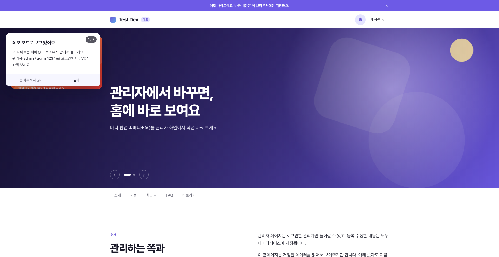
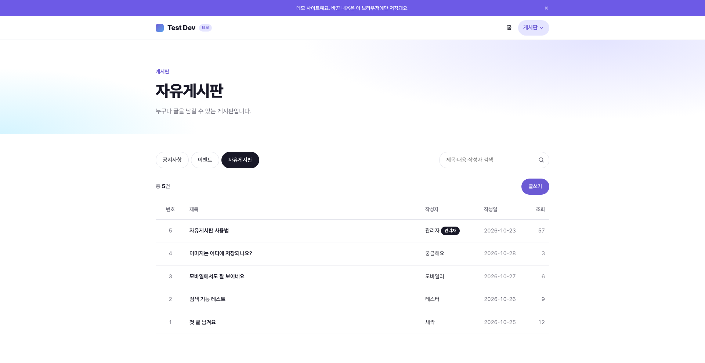
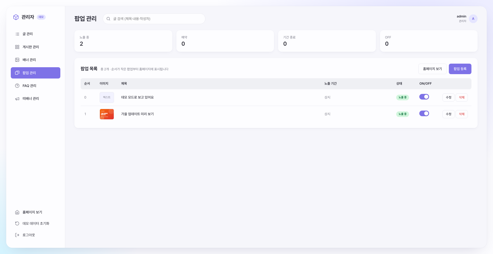
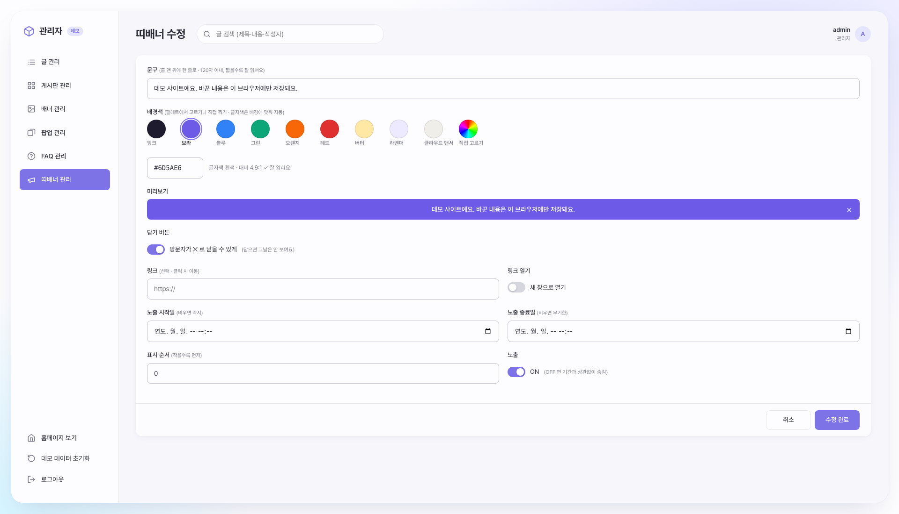
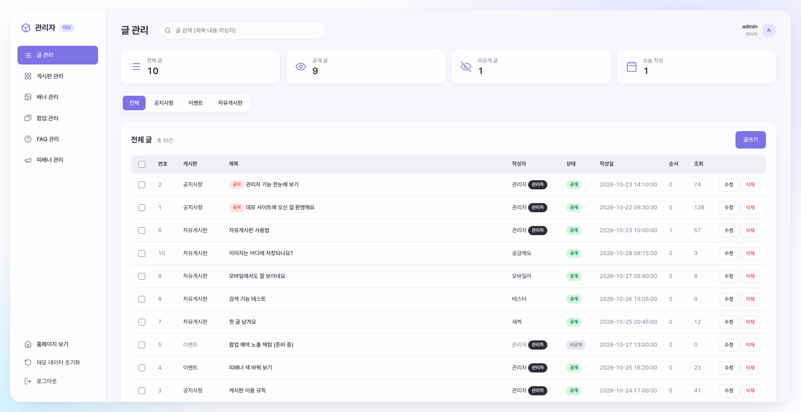
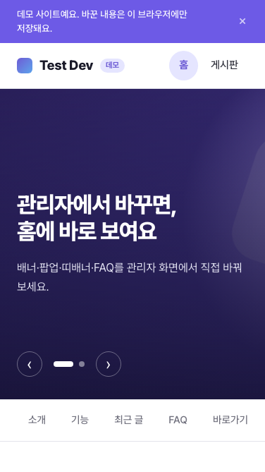

메인
맨 위 띠배너, 배너 슬라이더, 공지 팝업, FAQ, 최근 글이 모두 관리자에서 등록한 데이터로 그려집니다. 팝업이 여러 개면 카드처럼 겹쳐 쌓아 한 장씩 보여 주고, 섹션 탭은 스크롤 위치에 맞춰 현재 구역을 표시합니다.
React를 손에 익히기 위해 만든 연습 프로젝트입니다. 관리자 페이지에서 팝업·배너·띠배너·FAQ·게시글을 등록하면 홈페이지에 바로 반영되는 사이트를 처음에는 PHP로 만들었고, 이후 화면을 React + TypeScript로, 데이터를 JSON API로 나눠 다시 구현해 봤습니다. 코딩과 검수는 Claude와 함께 진행했습니다.

맨 위 띠배너, 배너 슬라이더, 공지 팝업, FAQ, 최근 글이 모두 관리자에서 등록한 데이터로 그려집니다. 팝업이 여러 개면 카드처럼 겹쳐 쌓아 한 장씩 보여 주고, 섹션 탭은 스크롤 위치에 맞춰 현재 구역을 표시합니다.

게시판별 목록, 검색, 페이지네이션을 구현했습니다. 검색어와 페이지를 주소(URL)에 담아 새로고침·뒤로 가기·링크 공유를 해도 같은 화면이 나오고, 방문자 글은 비밀번호로 수정·삭제합니다.
단순히 화면을 옮기는 데서 그치지 않고, 데이터를 주고받는 구조와 사용자가 겪는 상태(로딩·오류·빈 화면)까지 함께 설계했습니다.
모든 요청을 하나의 API 함수로 모아 오류 형식을 통일하고, TanStack Query로 로딩·오류·재시도와 캐시를 관리했습니다.
저장·노출 ON/OFF 뒤 관련 캐시를 무효화해서, 관리자에서 바꾼 내용이 목록과 홈페이지에 바로 반영되게 했습니다.
API 응답과 입력값의 모양을 타입으로 정의해, 화면에서 잘못된 필드를 쓰면 실행 전에 알 수 있게 했습니다.
로딩·오류, 페이지네이션, 토스트 알림, 삭제 확인 시트, 스위치, 노출 기간 입력을 공통 컴포넌트로 만들어 여러 화면에서 재사용했습니다.
관리자 화면을 숨기는 것뿐 아니라, API가 요청마다 로그인과 CSRF 토큰을 확인해 권한이 없으면 401·403으로 막습니다.
GitHub Pages에서도 동작하도록 API와 같은 규칙으로 답하는 데모 서버를 브라우저 안에 만들고, GitHub Actions로 자동 배포했습니다.
팝업 관리 목록입니다. 노출 중·예약·기간 종료·OFF 개수를 위에서 바로 확인하고, 스위치로 노출을 켜고 끄면 새로고침 없이 상태 배지와 알림이 바뀝니다. 실패하면 스위치를 원래대로 되돌립니다.

띠배너 편집 화면입니다. 팔레트·컬러 피커·HEX 입력으로 배경색을 고르면 글자색을 WCAG 대비 기준으로 자동 계산하고, 미리보기와 대비 값을 함께 보여 줘 잘 읽히지 않는 색을 미리 알 수 있습니다.

글 관리 화면입니다. 게시판 필터와 검색, 여러 글을 선택해 공개·비공개·게시판 이동·삭제를 한 번에 처리하는 일괄 작업을 제공합니다.

모바일에서는 팝업이 화면 아래에서 올라오는 시트로 바뀌고, 관리자 메뉴는 엄지가 닿는 하단 탭바로 바뀝니다.
